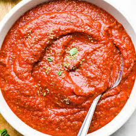

Homemade Pizza Sauce

Description
This easy Homemade Pizza Sauce Recipe is made in 5 minutes with 8 ingredients.
This no-cook sauce is truly the best pizza sauce recipe ever.
This is our go-to easy homemade pizza sauce recipe. It takes five minutes to make and results in the best pizza you have ever had.
Ingredients
- 6 oz tomato paste
- 15 oz tomato sauce
- 1-2 Tablespoons dried oregano to taste
- 2 Tablespoons Italian seasoning
- 1/2 teaspoon garlic powder
- 1/2 teaspoon onion powder
- 1/2 Tablespoon garlic salt
- 1/4 teaspoon freshly ground black pepper
- 1 teaspoon sugar
Steps
- Mix tomato paste and sauce together in a medium size bowl until smooth.
- Add the rest of the ingredients - oregano, Italian seasoning, garlic powder, onion powder, garlic salt, pepper and sugar.
- Stir until evenly distributed throughout the sauce.
- Sprinkle on another layer of cheese then place another tortilla on top.
- Taste and adjust seasonings to your liking.
- Spread onto your favorite pizza dough recipe.